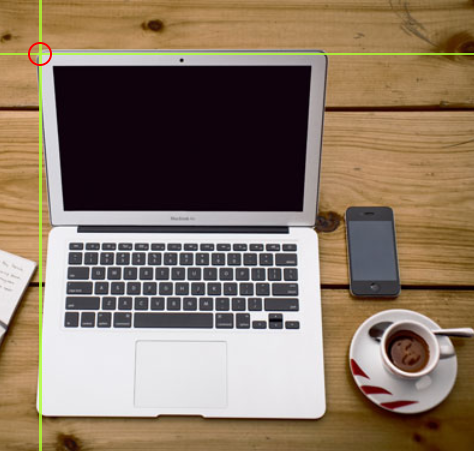
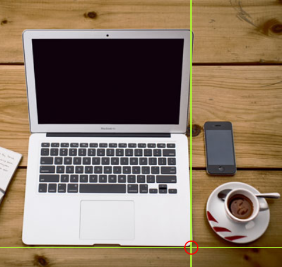
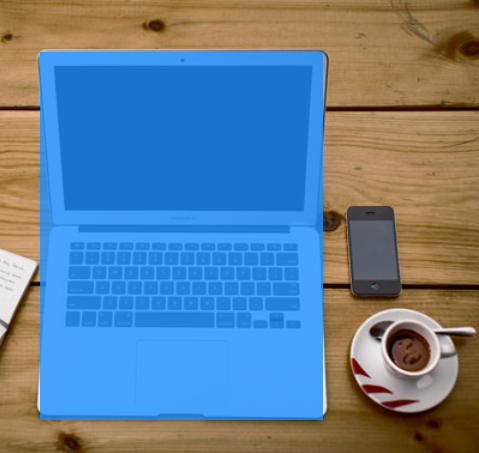

Avec les images cliquables HTML, vous pouvez créer des zones cliquables sur une image.
La balise HTML "map" définit une carte-image. Une carte-image comportant des zones cliquables. Les zones sont définies par une ou plusieurs balises "area".
Essayez de cliquer sur l'ordinateur, le téléphone ou la tasse de café dans l'image ci-dessous :

Le principe d'une image cliquable est que vous devriez pouvoir effectuer différents actions en fonction de l'endroit où vous cliquez sur l'image.
Pour créer une image cliquable, vous avez besoin d'une image et d'un code HTML qui décrit les zones cliquables.
L'image est insérée à l'aide de la balise "img". La seule différence par rapport aux autre images est que vous devez ajouter un attribut usemap :
<img src="workplace.jpg" alt="Workplace" usemap="#workmap">La valeur "usemap" commence par un hashtag # suivi du nom de la carte d'image et sert à créer une relation entre l'image et la carte d'image.
Ajoutez une balise "map"
L'élément "map" permet de créer une image cliquable et est lié à l'image grâce à l'attribut "name" requis :
<map name="workmap">L'attribut "name" doit avoir la même valeur que l'attribut "usemap" de la balise <img>
Ajoutez ensuite les zones cliquables.
Une zone cliquable est définie à l'aide d'une balise <area>
Vous devez définit la forme de la zone cliquable et vous pouvez choisir l'une des valeurs suivantes :
Vous devez également définit certaines coordonnées pour pouvoir plae la zone cliquable sur l'image.
Les coordonnées pour shape="rect" sont fournis par paires, une pour l'axe x et une pour l'axe y.
Ainsi, les coordonnées 34,44 correspondent à une position située à 34 pixels de la marcge gauche et à 44 pixels du haut :

Les coordonnées 270,350 correspondent à 270 pixels à partir de la marge gauche et 350 pixels à partir du haut :

Nous disposons désormais de suffisamment de données pour créer une zone rectangulaire cliquable :
Il s'agit de la zone qui devient cliquable et qui redirige l'utilisateur vers la page "computer.html" :
